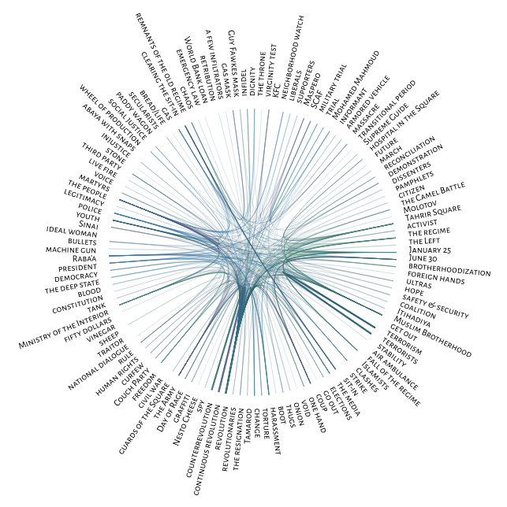

<!DOCTYPE html>
<html lang="en">

<head>
    <!-- Basic Page Needs
  –––––––––––––––––––––––––––––––––––––––––––––––––– -->
    <meta charset="utf-8">
    <title>قاموس الثورة </title>
    <meta name="description" content="A Dictionary of the Revolution is a project that documents the rapid amplification of public political speech following the revolution of 25 January 2011 in Egypt.">
    <meta name="author" content="">
    <!-- Mobile Specific Metas
  –––––––––––––––––––––––––––––––––––––––––––––––––– -->
    <meta name="viewport" content="width=device-width, initial-scale=1">
    <!-- mobile Redirect
  –––––––––––––––––––––––––––––––––––––––––––––––––– -->
    <script type="text/javascript">

    </script>
    <!-- CSS
  –––––––––––––––––––––––––––––––––––––––––––––––––– -->
    <link rel="stylesheet" href="css/normalize.css">
    <link rel="stylesheet" href="css/skeleton.css">
    <link rel="stylesheet" href="css/qamoos-en.css">
      <!-- Javascript Libraries
  –––––––––––––––––––––––––––––––––––––––––––––––––– -->
    <script language="javascript" src="lib/newp5.min.js"></script>
    <script language="javascript" src="lib/p5.dom.min.js"></script>
</head>

<body>
       <!-- THE DATA
  –––––––––––––––––––––––––––––––––––––––––––––––––– -->
    <script src="data/termsEN.js"></script>
    <script src="data/theCoMatrix.js"></script>

    <!-- Primary Page Layout
  –––––––––––––––––––––––––––––––––––––––––––––––––– -->
    <div class="container">

        <div class="row" id="chordEN">
<!--            <center> </center> -->
        </div>
<!--        <a class="button" id="moreLink" href="about-en.html">About</a>-->


    </div>
    <!-- End Document
  –––––––––––––––––––––––––––––––––––––––––––––––––– -->
   <script language="javascript" src="chord-en.ts"></script>
     <script>
        window.onresize = function(){ window.location.reload(); }
    </script>
</body>

</html>
